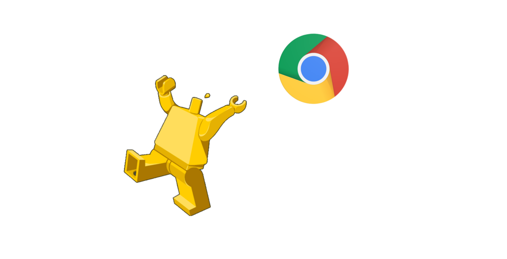

Собираем свой Google Static Maps
Постановка задачи
- Мониторинг грузовиков
- Оперативный мониторинг грузовиков
- Чтобы само всё рассказывало

Алгоритм
- Отправляем geojson
- Рисуем карту через Google Maps JS API
- Делаем скриншот
- Отправялем байты обратно
Превозмогая трудности
- Хром на сервере
- Недокументированное CLI API
- Retina
- pyppeteer
- Нужен Chromium 64
Зачем Docker
- Одинаковое окружение на ноуте и в проде
- Легко запускается сложное наши сишные либы
- Работает на всех платформах
- Linux — стандартые пакеты
- Mac — Xyivee
- Win — VirtLib / Virtualbox
- Лучшая изоляция
- pyppeteer -> puppeteer
Как создать докер-образ и работать с ним